Responsive Images
Wifi: SmashingConf
Password: ModernIE
Who????
What is Responsive images?
Efficiently load properly dimensioned images that fit the page's design
<history>
Mobile Web
Mobile Web
And then
RWD
- Media Queries
- Fluid grids
- Flexible images
"Flexible images???"
"That's easy"
"Just send the largest possible image"
"And let the browser resize it"
All done!!!
BLOAT!!!
72% Serve same resources

Which resources?
Images - over 63%

How much can be saved?
Up to™ 72% image data savings

data plan abuse
The year is 2011. Be the RICG.
People demanded a solution
Turned to the mailing lists

Proposals!

Y U NO MEDIA ATTR
Moar proposals!
Y U NO CSS
And MOAR!!!
Y U NO JS
<picture> proposal
srcset proposal
Picture vs. srcset!
Picture *and* srcset
Browsers weren't convinced
9 months later
Src-N
Moar proposals???
Y U NO *
Back to picture
Mozilla were positive
Blink tho
So, crowdfunding to the rescue
Patches got landing
{kind=link}
~80 patches later
Blink work is done
WebKit is half way through
Shipped in Chrome 38
A group effort
</history>
<syntax>
The srcset 'x' part
Use case
"Retina images"
Load hi-res images
on hi-res devices

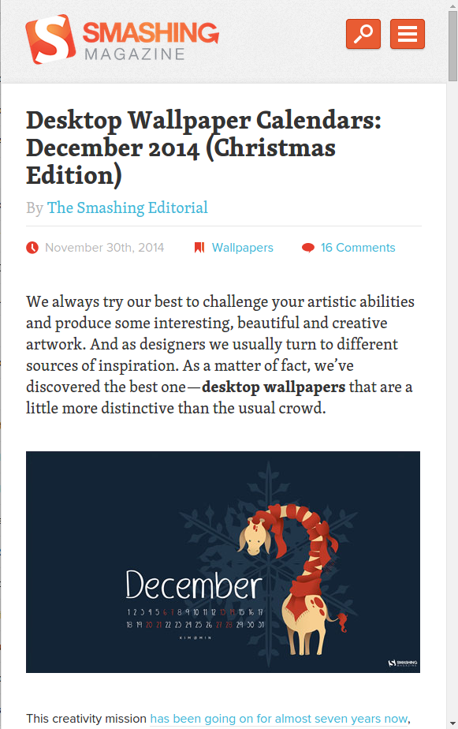
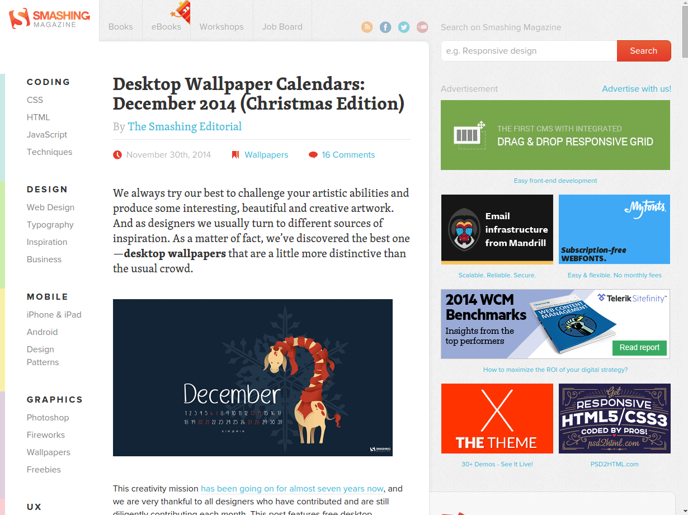
<img src="1x.jpg"
srcset="2x.jpg 2x, 2.6x.jpg 2.6x"
alt="A giraffe.">
How does that work?
What's a pixel anyway?
How are the images picked?
Image density???
Now your turn
The sizes + srcset 'w' descriptor part
http://ericportis.com/posts/2014/srcset-sizes/
use case - variable width images

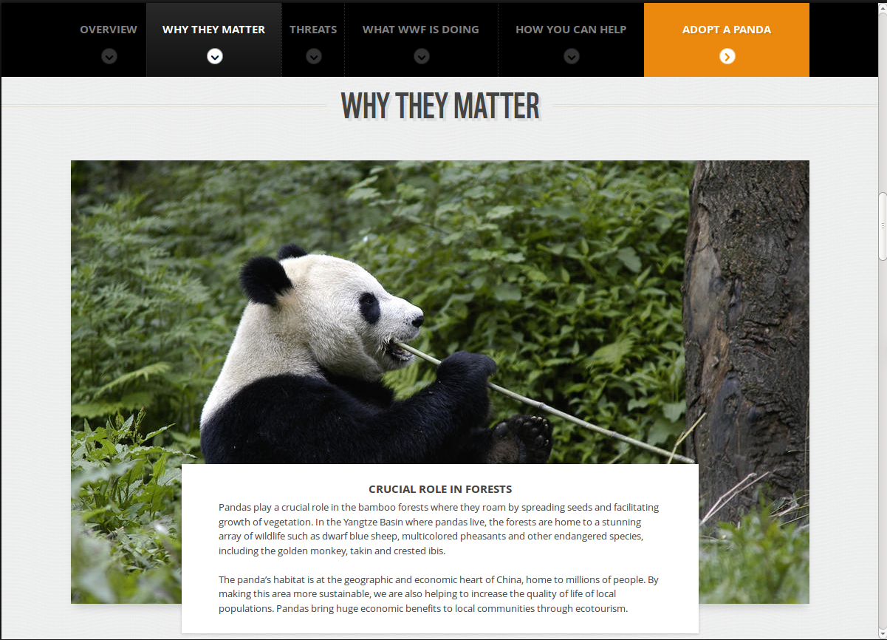

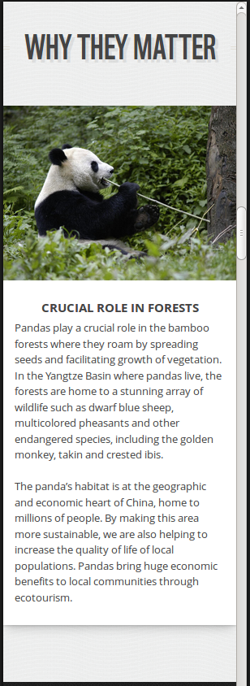
<img src="panda.jpg"
sizes="100vw"
srcset="panda200.jpg 200w,
panda400.jpg 400w, panda800.jpg 800w,
panda1200.jpg 1200w, panda2400.jpg 2400w"
alt="A panda.">


<img src="senator.jpg"
sizes="44vw"
srcset="senator200.jpg 200w,
senator400.jpg 400w, senator800.jpg 800w,
senator1200.jpg 1200w, senator2400.jpg 2400w"
alt="A senator.">
But wait, there's more
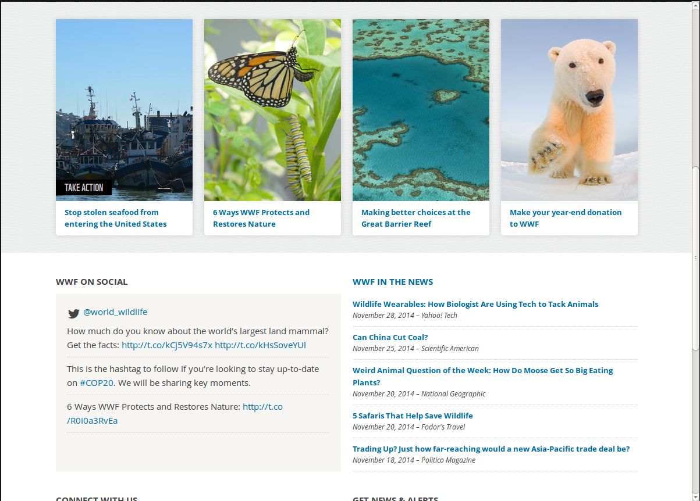
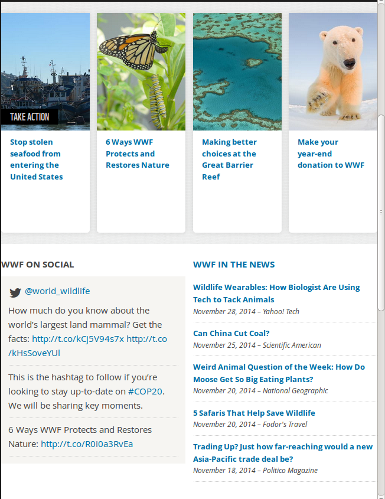
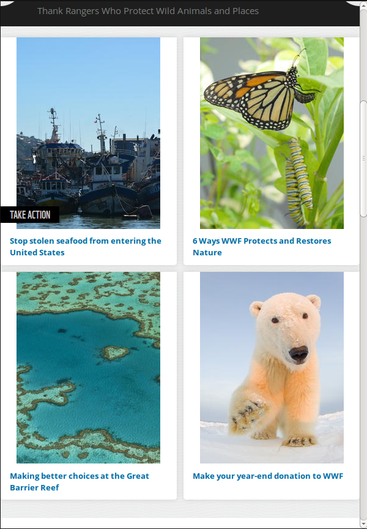
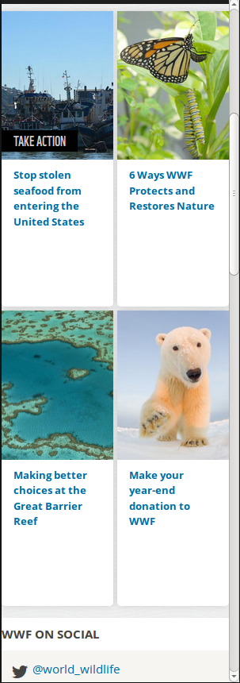
The syntax
<img src="panda.jpg"
sizes="(max-width: 30em) 100vw,
(max-width: 50em) 50vw,
calc(33vw - 100px)"
srcset="panda200.jpg 200w,
panda400.jpg 400w, panda800.jpg 800w,
panda1200.jpg 1200w, panda2400.jpg 2400w"
alt="A panda.">
That can't be right...
<img src="otherpic.jpg"
sizes="(min-width: 1200px) 235px,
(min-width: 641px) 24vw,
(min-width: 470px) 235px,
50vw"
srcset="thumb100.jpg 100w,
thumb200.jpg 200w, thumb235.jpg 235w,
thumb470.jpg 470w"
alt="Some animal.">
Separation of concerns?
`sizes` is an optimization
Use case
Art direction


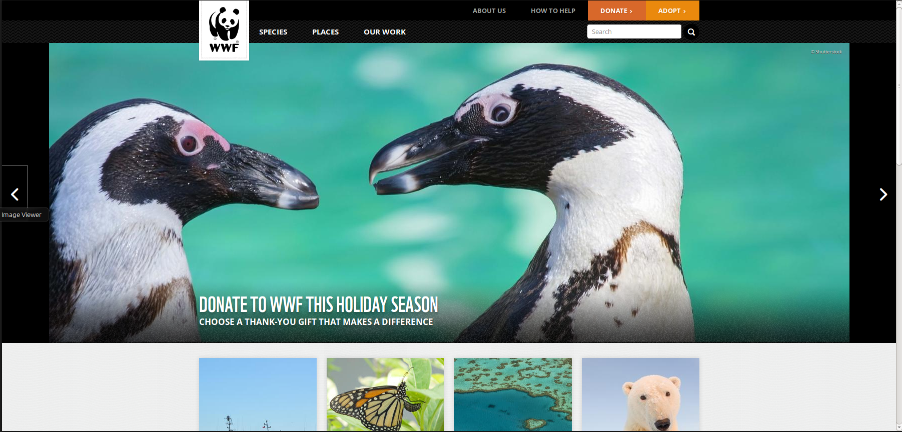
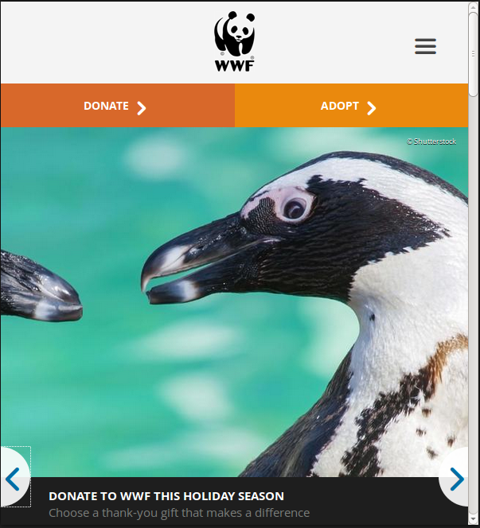
The syntax
<picture>
<source media="(min-width: 45em)" srcset="large.jpg">
<source media="(min-width: 18em)" srcset="medium.jpg">
<img src="small.jpg" alt="The president.">
</picture>
Use case #2 - MIME type fallback

Mime type fallback syntax
<picture>
<source type="image/webp"
srcset="prez.webp">
<source type="image/vnd.ms-photo"
srcset="prez.jpx">
<img src="prez.jpg" alt="The president.">
</picture>
All together now
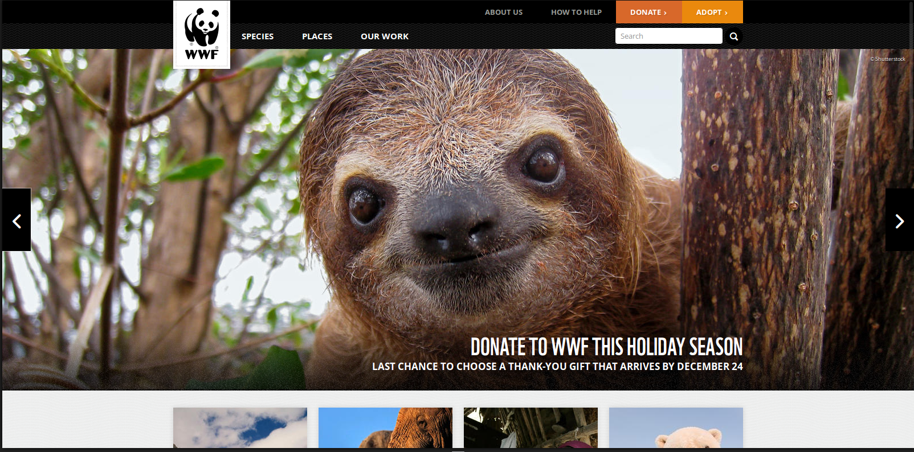
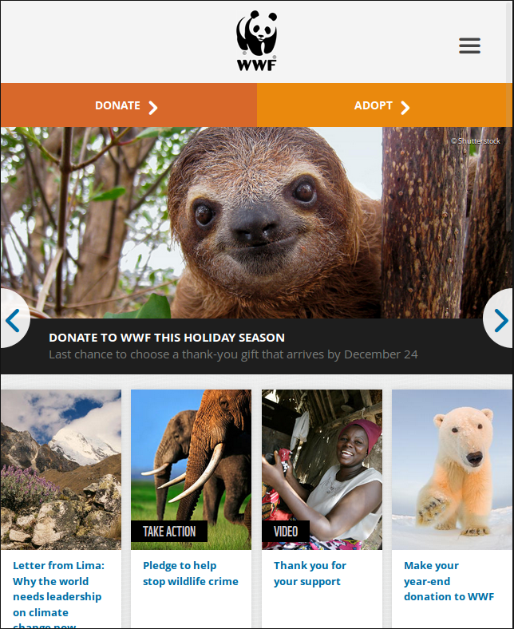
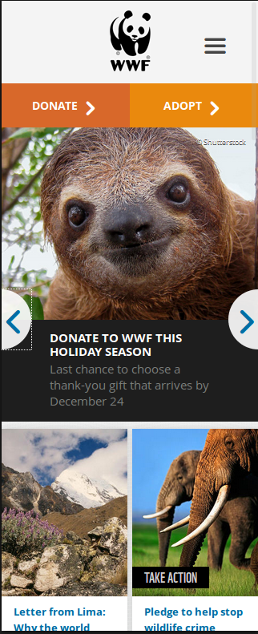
<picture>
<source media="(min-width: 641px)"
sizes="(max-width: 1600px) 100vw,
1600px"
srcset="sloth_bg_640.jpg 640w,
sloth_bg_960.jpg 960w, ...">
<img src="sloth.jpg"
srcset="sloth_320.jpg 320w,
sloth_480.jpg 480w, ..."
alt="A rad sloth.">
</picture>
or even
<picture>
<source media="(min-width: 80em)"
srcset="fixed_with_bg.1x.jpg 1x, fixed_with_bg.2x.jpg 2x">
<img src="otherpic.jpg" alt="The president giving an award."
sizes="(max-width: 30em) 100vw,
(max-width: 50em) 50vw,
calc(33vw - 100px)"
srcset="pic100.jpg 100w, pic200.jpg 200w,
pic400.jpg 400w, pic800.jpg 800w, pic1600.jpg 1600w,
pic3200.jpg 3200w">
</picture>
</use-cases>
<support>


srcset 'w' usage
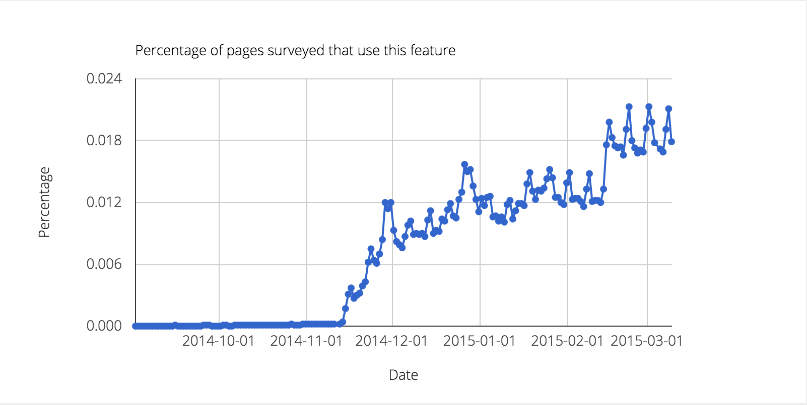<picture> usage

srcset 'x' usage
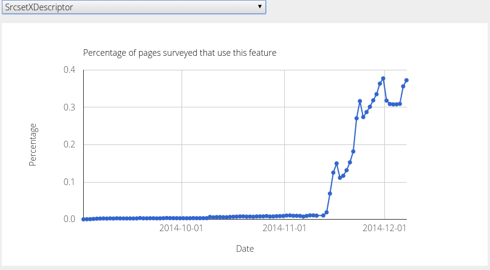</support>
<advice>
To picturefill or
https://www.flickr.com/photos/33122834@N06/3601626998
Double download vs. JS-only
<picture> or srcset?
Source order matters
<picture>
<source media="(min-width: 45em)"
srcset="large.jpg">
<source media="(min-width: 18em)"
srcset="medium.jpg">
<img src="small.jpg" alt="The president.">
</picture>
!=
<picture>
<source media="(min-width: 18em)"
srcset="medium.jpg">
<source media="(min-width: 45em)"
srcset="large.jpg">
<img src="small.jpg" alt="The president.">
</picture>
Source-size order matters
sizes="(max-width: 30em) 100vw,
(max-width: 50em) 50vw,
calc(33vw - 100px)"
!=
sizes="(max-width: 50em) 50vw,
(max-width: 30em) 100vw,
calc(33vw - 100px)"
'sizes' default value
Intrinsic sizing

Moar intrinsic sizing

Without sizes & CSS
'w' resources will *display* at 100vw
src cannot be selected when 'w' is present
<img src="otherpic.jpg" alt="The president giving an award."
srcset="pic100.jpg 100w, pic200.jpg 200w">
Styling
"Picture is a magical span, nothing more"
- Tab Atkins
Alternative text
Future compat
Feature detection FTW!
HTMLImageElement.sizes&HTMLPictureElement
Which resource was picked?
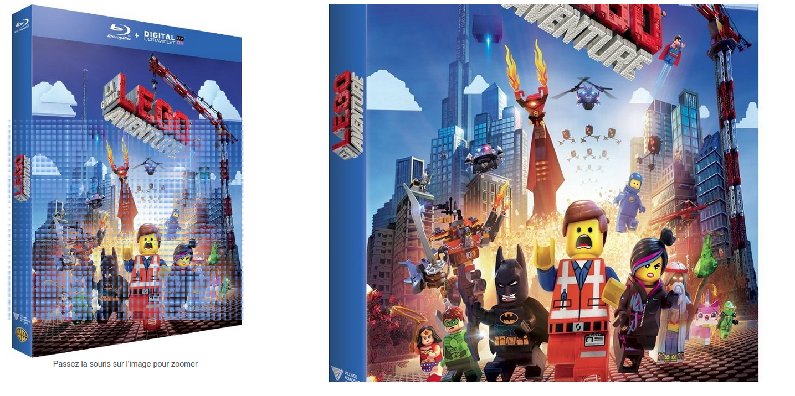currentSrc to the rescue
Mixed x and w descriptors. Don't.
<img src="otherpic.jpg" alt="The president giving an award."
srcset="pic100.jpg 100w 1x, pic200.jpg 100w 2x">
'w' resources may get picked at higher DPRs
There's no way to define "compressive" images in srcset
</advice>
<quiz>
AKA: What's wrong with this <picture>?
<picture>
<source sizes="100vw"
srcset="pic100.jpg 100w, pic200.jpg 200w">
<img src="otherpic.jpg" sizes="100vw"
alt="The president giving an award."
srcset="pic100.jpg 100w, pic200.jpg 200w">
</picture>
Unnecessary picture
<img src="otherpic.jpg" sizes="100vw"
alt="The president giving an award."
srcset="pic100.jpg 100w, pic200.jpg 200w">
<picture>
<source media="(min-width: 18em)" srcset="medium.jpg">
<source media="(min-width: 45em)" srcset="large.jpg">
<img src="small.jpg" alt="The president.">
</picture>
Source order
<picture>
<source media="(min-width: 45em)" srcset="large.jpg">
<source media="(min-width: 18em)" srcset="medium.jpg">
<img src="small.jpg" alt="The president.">
</picture>
<picture>
<source media="(min-width: 45em)" src="large.jpg">
<source media="(min-width: 18em)" src="medium.jpg">
<img src="small.jpg" alt="The president.">
</picture>
src is ignored on source
<picture>
<source media="(min-width: 45em)" srcset="large.jpg">
<source media="(min-width: 18em)" srcset="medium.jpg">
<img src="small.jpg" alt="The president.">
</picture>
sizes="(max-width: 30em) 100vw,
calc(33vw - 100px),
(max-width: 50em) 50vw"
source-size order
sizes="(max-width: 30em) 100vw,
(max-width: 50em) 50vw,
calc(33vw - 100px)"
<img src="small.jpg" alt="The president." sizes="50vw"
srcset="400x200.jpg 600w, 800x400.jpg 1200w">
Image dimensions should be accurate
<img src="small.jpg" alt="The president." sizes="50vw"
srcset="400x200.jpg 400w, 800x400.jpg 800w">
<img alt="The president." sizes="100vw" srcset="small.jpg 600w, large.jpg 1200w">
src fallback
<img alt="The president." src="fallback.jpg"
sizes="100vw" srcset="small.jpg 600w, large.jpg 1200w">
<img src="small.jpg" alt="The president."
srcset="small.jpg 1x, medium.jpg 1.5x, large.jpg 2x">
Duplicate 1x url
<img src="small.jpg" alt="The president."
srcset="medium.jpg 1.5x, large.jpg 2x">
<img src="small.jpg" alt="The president." sizes="50vw"
srcset="small.jpg 200w 1x, medium.jpg 200w 2x, large.jpg 400w 1x">
Mixed descriptors
<img src="small.jpg" alt="The president." sizes="50vw"
srcset="small.jpg 200w 1x, medium.jpg 200w 2x, large.jpg 400w 1x">
</quiz>
Why not JS?
Why not CSS?
And background images?
Art-direction with MQs
-webkit-image-set()
Variable-width images - MIA
Adding 'w' based descriptors
No need for sizes
Adding a `format()` function
What's in the future?
Client Hints
Content negotiation based
Request headers
CH-DPR
CH-RW
Resource WidthImplicitly relies on 'sizes'
Response headers
DPR
Server confirmation header
Used for intrinsic image sizing
Opt-in only???
Not sent on initial HTML request
Status
Responsive Image Container
- File format approach
- A "layer" per resolution
- Both resolution switching and art-direction
Resolution switching

336x635

106x200


211x400


336x635
Art-direction

770x512

200x200

400x288

770x512
Advantages
- Markup left untouched
- A single file per image
- Better for post-download dimensions changes
disadvantages
- Touches many layers. Will take time
- Decoding performance???
- Fetching mechanism network performance???
Lazy loading
What is lazy loading?
JS based solutions
Standard proposals
- Resource priorities
- Hixie's prioritization & dependency proposal